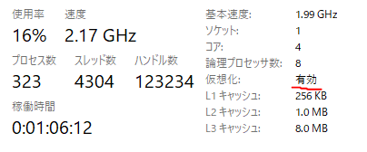
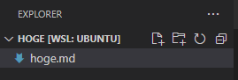
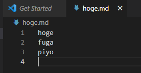
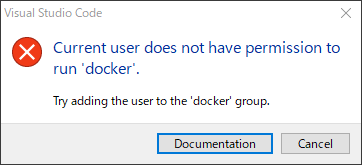
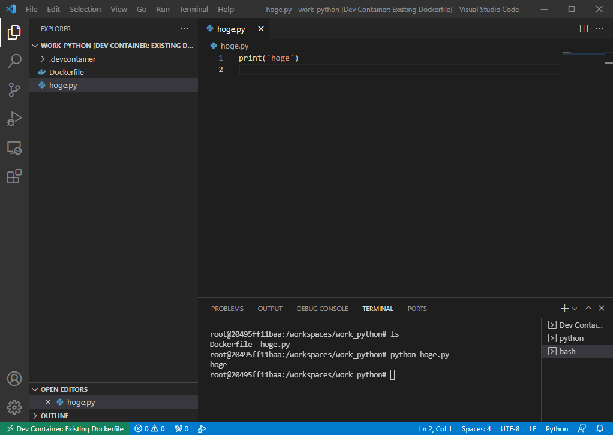
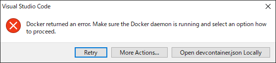

頑張らないために頑張る
ゆるく頑張ります
Proxy環境下のWSLにDockerを構築してVS Codeからアクセスする
概要
Proxy環境下のWSLで、Dockerをインストールしコンテナを構築する手順についてメモします。さらに、構築したコンテナにVS Codeからリモートでアクセスして編集してみるところまでやってみました。
なお、めちゃめちゃ長いです。コーヒー片手にでもお読みください。
そもそもなんでそんなことすんの
Docker Desktop便利すぎてダメ人間になりそうだから。っていうのは半分嘘ですが、普段使っているWindows環境でLinuxが利用できるWSLという機能がせっかくあるので、どうせなら勉強ついでにDockerでも入れてWSL環境で運用してみようかな、というのが理由。
Docker Desktopが従業員250名を超えるなどの条件を満たす企業での利用は有料となったため、WSLへの移行を検討していた人もいらっしゃるかと思いますが・・・そういう人たちはさすがにもう移行してるよね？まぁDocker Desktopが優秀なので、むしろ今まで無料で使えていたことのほうが異常という気もしなくはないのですが。
手順
前提条件
- Windows 10以降
- 現状でDocker Desktopを利用中
- ディストリビューションはUbuntuを利用
- エディタはVisual Studio Code
上記の環境を想定しています。
WSL2の有効化
フルオートでインストールする
まず基盤となるWSL2環境を準備します。WSLのインストール手順については、マイクロソフトの「WSLのインストール」を参照するのが早いです。
とは言ってもWSLの環境構築はすこぶる簡単で、コマンドを1つ実行すればあとは待っているだけでいいのが素晴らしい。
wsl --install上記のコマンドをPowerShell上で実行すればよく、Linuxカーネルのダウンロードやインストール、WSL2の既定設定がオートで実行されます。
マニュアルでインストールする
Proxy環境下では上記のコマンドが動作しない（ただ、どうも例外があるようで動作するケースもあるようです。一応上記の方法を試してみて、ダメならマニュアルインストールを行ってみるといいかもしれません）。そのため、別の方法を検討する必要があります。つまり、マニュアル作業でUbuntuをWSL2環境にインストールします。手順はここにあります。
- PowerShellで
Enable-WindowsOptionalFeature -Online -FeatureName Microsoft-Windows-Subsystem-Linuxを実行しWSLをインストールします。この際、インストール終了時にリブートを求められるはず。 - ディストリビューションのパッケージをダウンロードします。ここから好きなディストリビューションを選択してダウンロードします。
curlを使う方法もあるのですが、上記のwebページから直接ダウンロードした方が早いです。 - PowerShellで先ほどダウンロードした
Add-AppxPackage C:\Users\XXX\Downloads\Ubuntu2004.appxを実行して、パッケージをインストールします。 - インストールが完了すると、スタートメニューからUbuntuが選択できるようになっているはす。
結果確認
前提条件の通りここではUbuntuをインストールすることを想定しています。バージョンは、特別な理由がない限り指定する必要はありません。デフォルトではUbuntuの最新版がインストールされるはず。
一度インストールが完了すれば、以降はUbuntuをスタートメニューから起動できるようになるはず。初期起動時、Ubuntu環境でのユーザーIDとパスワードを入力する必要があるので、適当に決めておきましょう。
Ubuntuのコンソールにログイン後、バージョンを確認します。
cat /etc/os-release上記のコマンドを実行すると、Ubuntuのバージョン情報が表示されます。
仮想化の確認は事前にしておこう
インストールの時点でCPU側が仮想化をサポートしていない場合エラーが発生します。仮想化に対応しているか（利用可能か）は、タスクマネージャーを参照すると確認できます。事前にやっておくと吉。

Ubuntuのデフォルトユーザーを変更する
この時点ではUbuntuのデフォルトユーザーが、インストール後に設定した任意のユーザーとなっているはずです。通常の利用ではそれでも問題ないのですが、後述する「VS CodeからDockerを起動する処理」を行う際に、処理が権限の不一致でエラーになります。そのため、これを回避するためにデフォルトユーザーをrootに変更します。最初から最高権限のユーザーを利用すれば、前述の権限問題は気にしないで済むからです。ただし、最高権限であるがゆえに誤操作などのアクシデントには弱くなるので、そこだけは注意。
$ sudo su -
# passwdUbuntuにログイン後、まずrootになります。その後rootのパスワードを設定しておきましょう。その後Ubuntuのコンソールはいったん終了します。
wsl -l --verbosePowerShellで上記のコマンドを実行して、WSLで動作しているディストリビューションの一覧を表示します。
NAME STATE VERSION
* Ubuntu Stopped 2
Ubuntu-20.04 Running 2環境にも依りますが、だいたい上記のような結果が返ってくるはず。上記の例では、2つのディストリビューションが存在していることになります。
<DISTRIBUTION_NAME> config --default-user root次に、上記のコマンドを実行することで、指定したディストリビューションのデフォルトユーザーがrootになります。
たとえばデフォルトユーザーを変更したいディストリビューションがUbuntuである場合、ubuntu config --default-user rootとします。ここで注意が必要なのは、複数のディストリビューションが動作している場合。前述のwsl -lを実行した結果のUbuntu-20.04についてデフォルトユーザーを変更したい場合、実行するコマンドはubuntu2004 config --default-user rootです。ピリオドなどの記号がディストリビューション名に含まれているため、ディストリビューション名をそのままコマンドとしては利用できないのです。そのため、ここでは「Ubuntu-20.04」から記号などを除き小文字化した結果の「ubuntu2004」が<DISTRIBUTION_NAME>となります。
ここまで実行できたら再度Ubuntu環境にログインします。この時点で、デフォルトユーザーがrootになっているはず。
# whoami
root大抵の環境ではrootになった際、ユーザー名などがコンソールに表示されたりしてプロンプトが変わっているはずなので、確認するまでもないとは思います。念のため確認するなら、whoamiを実行すると自分の名前（ユーザー名）を表示するので、これを使ってrootでログインできているかを見ることが可能です。
UbuntuにProxyを設定する
インストールしたての状態ではProxy設定が施されていないはず。
printenv HTTP_PROXY HTTPS_PROXY上記のコマンドを実行して、結果が何も返ってこない場合は設定が未済であると判断できます。
export HTTP_PROXY="http://<PROXY_SERVER>:<PORT>/"
export HTTPS_PROXY=$HTTP_PROXY上記のコマンドを実行すると、環境変数にProxy情報が設定できます。
export HTTP_PROXY="http://<USERNAME>:<PASSWORD>@<PROXY_SERVER>:<PORT>/"
export HTTPS_PROXY=$HTTP_PROXY認証が必要なProxyの場合は、上記のようにアカウント情報を付与します。
なお、これらの情報は.bashrc内に設定した方が良い。コンソール上でexportを実行すると、コンソールごとに上記のコマンドを実行しなければいけません。この「コンソールごと」というのが曲者で、VS Codeのコンソールでもexportコマンドを発行しなければならずすこぶる手間です。よって、ユーザーログイン時に参照される.bashrcへ記述しておきましょう。
アプリケーション固有のProxyを設定する
環境変数にProxyを設定しただけではダメなアプリケーションがあり、たとえばapt-getは環境変数を設定したところでやっぱりコケます。ヒドい。なぜなら、apt-getにはそれ用の設定が必要であるためで、上記の設定とは別の方法でProxy設定を施す必要があります。
いくつか方法があるが、ここではapt.confファイルを作成します。
cd /etc/apt
sudo tee apt.conf <<EOF > /dev/null
Acquire::http::proxy "http://<USERNAME>:<PASSWORD>@<PROXY_SERVER>:<PORT>/";
Acquire::https::proxy "http://<USERNAME>:<PASSWORD>@<PROXY_SERVER>:<PORT>/";
EOFこれにより、apt-getが通るようになったはず。
次にwget用の設定を行う。なんでwgetの設定が必要かと言うと、あとでVS Codeを利用する際、VS CodeはVS Code用のサーバーをダウンロードしようとするのですが、どうもこれがwgetを用いて行われているようです。そのため、事前にwgetに対してProxy設定を施さないと、このダウンロード処理がコケてしまい詰んでしまいます。
cd
cat <<EOF > .wgetrc
http_proxy=http://<PROXY_SERVER>:<PORT>/
https_proxy=http://<PROXY_SERVER>:<PORT>/
proxy_user=<USERNAME>
proxy_password=<PASSWORD>
EOF上記の方法で.wgetrcファイルを作成することで、wgetのProxy設定が完了します。なお、上記はユーザーごとに指定する必要があるため、全ユーザーを対象にしたい場合は/etc/wgetrcに対し、上記と同じ変更内容を記述します。
UbuntuにDocker Engineをインストールする
Windows側で動作しているDocker Desktopが存在している場合は、コイツを止めておきましょう。
- タスクバー上に存在するDockerのクジラマークを右クリックします。
- 表示されたメニューから「Quit docker desktop」をクリックし、Docker Desktopをシャットダウンします。
Docker Desktopが終了したら、Ubuntu側にDocker Engineをインストールします。インストール手順はオフィシャルのドキュメントを参照します。
DockerにProxy設定を施す
Ubuntuの環境変数に追加しただけでは足りず、DockerのデフォルトとしてProxy情報を設定する必要があります。
vi /etc/default/dockerエディタで上記のファイルを開きます。
export HTTP_PROXY="http://<USERNAME>:<PASSWORD>@<PROXY_SERVER>:<PORT>/"
export HTTPS_PROXY="http://<USERNAME>:<PASSWORD>@<PROXY_SERVER>:<PORT>/"exportを忘れないように上記の編集を行います。
VS CodeにRemote-WSLをインストールする
すでにVS Codeはインストール済みである想定ですが、まだインストールされていない場合はここからインストールしておきます。
次に、VS Codeの拡張機能である「Remote-WSL」をインストールします。

拡張機能のインストールが終了したら、いったんVS Codeは終了します。
UbuntuでVS Codeを起動する
Ubuntuのターミナルを起動し、任意のフォルダを作成します。ここではホーム直下にhogeというフォルダを作成しました。
mkdir hoge
cd hoge
code .作成したフォルダにカレントディレクトリを変更したあとで、code .と実行することでVS Codeを起動できます。場合によっては（初回起動だと？）「この環境って信頼していいん？」という確認メッセージが表示されるので、「Trust」を選択しておきましょう。
VS Codeが起動したら適当なファイルを作成してみます。

VS Codeのエクスプローラーで新規ファイル作成を実行し、「hoge.txt」という名前で作成します。

内容を適当に編集し保存します。
$ cat hoge.md
hoge
fuga
piyoUbuntuのコンソールで保存したファイルを確認してみると、VS Code上で入力・保存した内容が参照できます。
WSLでDockerを動かす
service docker status上記コマンドを実行して、Dockerのサービスが動作中であることを確認します。
service docker start起動していない場合は上記のコマンドを実行して、サービスを開始します。
docker run hello-worldサービスを開始できたら動作確認のため、上記のコマンドを実行します。
Hello from Docker!
This message shows that your installation appears to be working correctly.
To generate this message, Docker took the following steps:
1. The Docker client contacted the Docker daemon.
2. The Docker daemon pulled the "hello-world" image from the Docker Hub.
(amd64)
3. The Docker daemon created a new container from that image which runs the
executable that produces the output you are currently reading.
4. The Docker daemon streamed that output to the Docker client, which sent it
to your terminal.
To try something more ambitious, you can run an Ubuntu container with:
$ docker run -it ubuntu bash
Share images, automate workflows, and more with a free Docker ID:
https://hub.docker.com/
For more examples and ideas, visit:
https://docs.docker.com/get-started/正常に完了したら上記のようなメッセージが表示されるはず。これで、設定と動作確認は完了。
mkdir work_python
cd work_python
touch Dockerfile
vi Dockerfile次に、Dockerfileからコンテナを作成するため、任意のフォルダ内にDockerfileを作成します。
FROM python:3.9-slim
ENV http_proxy http://<USERNAME>:<PASSWORD>@<PROXY_SERVER>:<PORT>/
ENV https_proxy http://<USERNAME>:<PASSWORD>@<PROXY_SERVER>:<PORT>/
ENV ACCEPT_EULA=Y
RUN apt-get update
ADD . /home/workdir
WORKDIR /home/workdirDockerfileの内容は基本的に任意だが、コンテナへProxy情報を渡すためENVを設定しています。上記の内容で保存します。
code .その後、code .を実行してVS Codeを起動し、いつもの通り「Reopen in container」を選択してコンテナをビルドします。
この時点で権限回りの問題がクリアできてないと、エラーを吐く。

これは、VS CodeのRemote経由でDockerのプロセスを起動させようとすると、root権限でないためDockerの実行が行えないというエラー。WSLのデフォルトユーザーが、（大抵の場合）rootではないユーザーになっていることが原因。
なお、仮になんとかDockerのコンテナをビルドできたとしても、それはそれでまた別の権限問題が出てくる可能性が高いです。それは、コンテナ内ではrootなのにWSLのログインユーザーがrootでないため、コンテナ内から作成したファイルの権限がWSLと異なってしまうためファイルへのアクセスができなくなってしまうから。そのため、WSLでのDocker環境はとくに権限回りに頭を悩ませがち。
このような権限問題を回避するため、前述の「デフォルトユーザーをrootに変更する」処理が必要になります。
各種の設定が正常に完了していれば、VS CodeがWSL内のコンテナにアクセスできるはず。

適当な*.pyファイルを作って実行してみます。正常に実行が終われば問題なし。VS CodeのPython用拡張機能がインストールされていれば、ここでF5キーを押すことで実行が可能になります。ただ、上記スクリーンショットの段階だとインストールしていなかったため、コンソールで*.pyファイルを指定して実行しています。
Dockerを常時起動させる
Dockerを常時起動させる設定を施します。rootでログインしてから.bashrcを編集します。
echo $(service docker status | awk '{print $4}')
if test $(service docker status | awk '{print $4}') = 'not'; then
/usr/sbin/service docker start
fi上記を.bashrcに追加することで、起動時にDockerが起動していなければ自動的にservice docker startを実行してくれます。上記のコマンドはroot権限で実行する前提であるため、sudoは付いていませんが、一般ユーザーの.bashrcに追加する場合はsudo /usr/sbin/service docker startのようにsudoを追加します。
WindowsとWSLを連携させる
ファイルをWindowsとWSLの間で連携させたい場合、WindowsからWSLのファイルを参照するパターンと、WSLからWindowsのファイルを参照する2パターンが存在します。
- WindowsからWSLのファイルを参照する
この場合、エクスプローラーに\\wsl$を入力します。するとWSL上に存在するディストリビューションが表示されます。複数のディストリビューションが存在する場合は、複数表示されます。この中から参照したいディストリビューションを選択します。あとは普段と同じ感覚で、WSL内のファイルをエクスプローラーで参照できるはずです。
2. WSLからWindowsのファイルを参照する
/mntにアクセスするとCというフォルダが存在します。これがWindowsのCドライブと接続されている。ここから、Windowsのフォルダを参照します。フォルダが深い階層にあると少々参照するのが面倒なので、任意の場所からシンボリックリンクでも張ると多少参照するのが楽になります。
WSL環境のDockerで過去の資産を利用したいとき
この記事を読んでいる層の中には、「Docker Desktopのライセンス内容が変更されたためにWSL環境でのDocker運用に移行しようとしている（あるいはした）」人がいるかもしれません。これまで書いてきた方法で、WSLでDockerを利用できる環境は構築できると思います。
ただ「WindowsのDocker Desktopで運用していたファイルなどの資産を、WSL環境のDockerから直接参照する」ケースは、少なくとも自分の環境ではエラーとなってしまいました。エラー内容などは後述しますが、エラーの回避策は/mnt/c配下にあるWindows環境の資産を直接参照するのではなく、一度/homeなどのWSL環境へコピーしてから参照することです。一度コピーする手順を踏むことで、エラーを回避できました。
備考
serviceを使う理由とsystemctlが使えない理由
Dockerの起動やステータス確認の際、上記ではserviceコマンドを実行しています。が、WSL環境でないフツーのLinuxでは、そのような場合にsystemctlを用いているようです。つまり、serviceからsystemctlに移行しています。
そこで、WSL環境でsystemctlを実行してます。使えるのかいな。
# systemctl
System has not been booted with systemd as init system (PID 1). Can't operate.
Failed to connect to bus: Host is downWSLではsystemctlが実行できませんでした。コマンドを発行しても上記のようなエラーを吐いて異常終了します。そのため、WSL環境下ではサービスの制御にserviceを使うことになります。systemctlの実行がエラーになる直接的な原因は、systemdがPID1で実行されていないためです。
# ps -aux
USER PID %CPU %MEM VSZ RSS TTY STAT START TIME COMMAND
root 1 0.0 0.0 908 528 ? Sl 08:33 0:00 /init
root 740 0.0 0.0 10836 3408 pts/1 R+ 16:36 0:00 ps -aux
root 1147 0.0 0.0 900 88 ? Ss 12:51 0:00 /initWSL環境でpsコマンドを実行するとわかりますが、PID1のプロセスは/initとなっています。systemdをPID1で実行すればsystemctlを利用できるようになるのですが、別なパッケージのインストールが必要です。systemctlを頻繫に利用する環境なら導入を検討しても良いと思いますが、今回はDockerのインストール時のみ必要となるためsystemctlによる設定を見送りました。
Windows環境のファイルはWSL環境へコピーすること
WSL環境は、/mnt/c配下にあるアドレスを辿ることでWindows環境にあるファイルを参照できます。このとき、WSL環境のVS CodeでWindows環境にあるファイルを使って、Dockerコンテナの作成を行うとエラーが発生します。
正確なところは謎ですが、どうもDockerfileが存在する環境においてDockerコンテナを作成する？ような挙動をします。WindowsにはDocker DesktopなどのDockerが動作するような環境はなく、もっぱらWSL上でDockerを動作させているため、WSL環境で実行する分には問題ないのですが、WSL環境からWindows環境にあるファイルを参照してDockerコンテナの作成を実行するとエラーが起きてしまいます。
- Windowsにおいて、任意のフォルダ（ここでは
c:\temp\とする）にDockerfileを作成し保存します。 - WSLのコンソールで
cd /mnt/c/tempと実行し、カレントディレクトリを変更します。 code .と入力してVS Codeを起動します。- VS Codeが起動すると、カレントディレクトリにはDockerfileが存在するため「Dockerコンテナで開くかい？」というポップアップが表示されます。ここで、「Reopen in container」をクリックします。ポップアップが表示されない場合は、VS Code画面左下のRemoteのメニューから「Reopen in container」を選択します。
- 上記のエラー発生。おいってばよ。

エラーウィンドウが表示されるが、これだけだとイマイチ要領を得ないんですよねぇ。そこでエラーログ側を見てみます。
Stop (842 ms): Check Docker is running
Docker returned an error code 1, message: Command failed: docker version --format {{.Server.APIVersion}}エラーログを見てみると、Dockerが起動しているかチェックするステップでエラーが起こっていることがわかります。そこで、なぁんだDockerが起動していないのかと思ってservice docker statusを実行してみると・・・WSL環境のDockerはすでに起動しています。なんじゃこりゃ。
「Reopen in container」をクリックしない（コンテナ作成処理を実行しない）でVS Codeのターミナルからdocker buildを手入力して実行すると、この場合はなぜ正常にコンテナ作成が完了します。ただ、この場合VS Codeでリモート接続できていないので、コンテナにログインしての編集ができません。
ここで、試しにWSLにて/home配下の任意のフォルダにて適当なDockerfileを作成して、code .を実行してVS Codeを立ち上げて同様に「Reopen in container」をクリックしてみます。すると、この場合は正常にコンテナが起動しちゃうんですよねぇ。なんだコレ。
このため、上記のエラーを回避するには「Windows環境にあるファイルを直接参照するのではなく、WSL環境にコピーしてからVS Codeでコンテナ作成を行う」という作業が必要になります。
参考
- WSLのインストール
- Manual installation steps for older versions of WSL
- WSL / WSL 2 をコマンドラインでインストールする
- 【WSL(Windows Subsystem for Linux)】Proxy環境でのインストール
- apt のプロキシ対応
- DockerDesktopからWSL2上のみで動くDockerに移行する
- [Linux] wgetをプロキシ経由で実行する方法
- Proxy 下で VS Code の WSL 拡張へ接続できない
- WSL 2 を利用したコンテナー内開発で権限をどう設定するべきか
- Proxy環境下で快適に作業する設定メモ
- WSL2+docker そして外部通信がブロックされてしまう問題対策
- wsl2でDocker自動起動設定
- WSLとwindows間のファイル連携;
- 【 ln 】コマンド――ファイルのハードリンクとシンボリックリンクを作る
- シンボリックリンクの貼り方